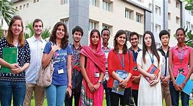

WELCOME TO VIT
Vellore is a city in the state of Tamil Nadu, in southern India. It's known for 16th-century Vellore Fort, with its imposing granite walls and surrounding moat. Inside the fort, the Jalakandeswarar Temple features many ornate sculptures. Nearby, the Government Museum has prehistoric relics and natural history displays. By the Palar River, the Muthu Mandapam memorial houses the tomb of a Tamil leader.
VIT VELLORE- A PLACE TO LEARN A CHANCE TO GROW
ABOUT VIT

VIT was established with the aim of providing quality higher education on par with international standards. It persistently seeks and adopts innovative methods to improve the quality of higher education on a consistent basis.The campus has a cosmopolitan atmosphere with students from all corners of the globe. Experienced and learned teachers are strongly encouraged to nurture the students. The global standards set at VIT in the field of teaching and research spur us on in our relentless pursuit of excellence. In fact, it has become a way of life for us. The highly motivated youngsters on the campus are a constant source of pride. Our Memoranda of Understanding with various international universities are our major strength. They provide for an exchange of students and faculty and encourage joint research projects for the mutual benefit of these universities. Many of our students, who pursue their research projects in foreign universities, bring high quality to their work and esteem to India and have done us proud. With steady steps, we continue our march forward. We look forward to meeting you here at VIT.
WHY ARE WE SPECIAL

Vellore Institute of Technology (VIT) University, Vellore often considered one of the best technical universities in India was established with the aim of providing quality higher education on par with international standards. VIT University aims to impart futuristic technical education and instill high patterns of discipline through our dedicated staff, who shall set global standards, making our students technologically superior and ethically strong, who in turn shall improve the quality of life of the human race. The university currently offers undergraduate, postgraduate, integrated and research programs in the fields of Engineering, Technology, Applied Sciences, and Management.